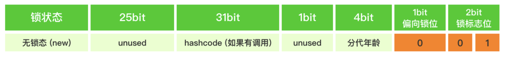
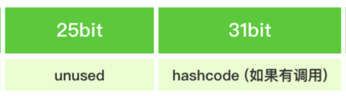

为什么64位的JVM的对象头中的HashCode长度是31
最近在学juc，看到对象头的解析，突然发现64位下无锁态的HashCode长度为31bits，32位是25bit，当时就在想，为什么是31？String的默认hashCode也是31，两者之间有什么联系吗？可惜的是没能在中文平台发现答案，外文平台经过一番查找终于找到了答案...
先来看64位无锁态对象头的结构：**

其中的hashcode占到了31bits
我们打开idea，使用
<dependency> <groupId>org.openjdk.jol</groupId> <artifactId>jol-core</artifactId> <version>0.17</version> </dependency>中的
xxxxxxxxxxClassLayout.parseInstance(对象).toPrintable()就能获得一个对象的详细信息：
xxxxxxxxxxOFF SZ TYPE DESCRIPTION VALUE0 8 (object header: mark) 0x0000001626786201 (hash: 0x16267862; age: 0)8 4 (object header: class) 0x0006724812 4 java.lang.String Dog.username (object)16 4 java.lang.String Dog.password (object)20 4 (object alignment gap)
注意！新创建的对象是默认偏向锁，你获得的结果会是偏向锁的数据！（原因详见jvm的锁机制）
必须要手动掉一次 对象.hashCode(); 方法才会将其转化为无锁态！
把0x0000001626786201转化为二进制：
1011000100110011110000110001000000001
可以看到只有37位，不是说mark_word一共有64位吗，但你从上图可以看到有总共26的空间没用到，所以实际上应该是：
0000000000000000000000000001011000100110011110000110001000000001
其中红色为哈希部分，蓝色为未使用部分，黄色为锁位，这里是001，说明是无锁态
好了，现在来解释，为什么选择31，明明还有这么多空闲位置却不用？
让我们来看markOop.hpp（jdk7/jdk7/hotspot: 9b0ca45cd756 src/share/vm/oops/markOop.hpp）
里面提到了：
xxxxxxxxxx// - hash contains the identity hash value: largest value is// 31 bits, see os::random(). Also, 64-bit vm's require// a hash value no bigger than 32 bits because they will not// properly generate a mask larger than that: see library_call.cpp// and c1_CodePatterns_sparc.cpp.可以知道，
1.os::random()方法只能产生31位的数字，这很好理解，int就是2^31-1
有人会问int不应该是32位吗？但是hashCode没有负数，就去掉int的一个符号位，成了31位(一些情况下会是负数，但这种设定决定了负数决不会是正常情况，大多是计算溢出导致的，或者一些方法抛弃了哈希质量产生了负数)
2.64位的JVM要求hashCode不能超过32位，不然会因为无法产生一个比其更大的掩码而出错
通过这个，我们也能理解为什么java中hashCode返回的是32位的int，原因很简单：更大的数有风险，且需要避免负数
个人觉得还有个原因，2^31 - 1已经很庞大了，所以没必要用到其他空闲部分接着做hashCode
况且对于底层有内存对齐要求，系统会把字节作为一个单位读取（其实也有双字节，四字节读取，计算机是用块来读取的），你可以看到：

这里加上分出来的一个未使用的1bit正好是8bit，也就是一字节，能直接读取，效率较高
对于前面的
其实严格来说hashcode是32位的，因为会分一个bit到31bit上组成4字节来直接读取，前面的unused部分也是24位，3字节方便偏移读取
只是这个bit仅仅只是用来对齐的，不属于hashcode，hashcode还是只有31bit
至于32位JVM的对象头:

25bit是实在没空间的做出的一种妥协，因为25不是8的倍数，效率方面上会有一定的损失
其他地方同64位并没有太多区别